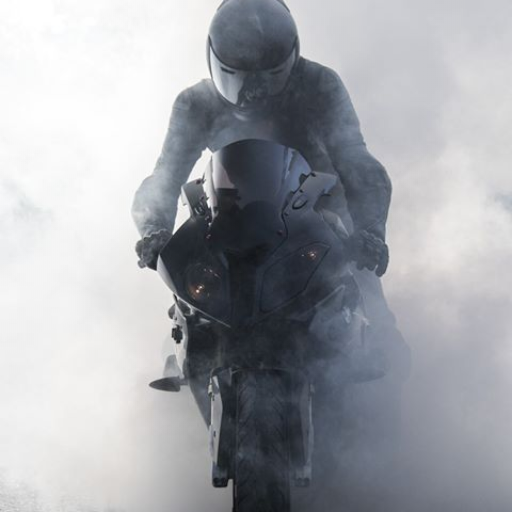

Existen muchos tipos de motos, en este caso se muestran los mejores modelos de las cilindradas más comunes tomando en cuenta principalmente su diseño y la velocidad máxima que ofrecen.
Explora motos de 1000cc, 600cc y 250cc de diferentes marcas y modelos.
Es importante mencionar que los modelos 250cc suelen estar mas enfocados a ser de ciudad, pero se tomaran en cuenta aquellos que tengan diseños deportivos.